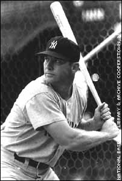
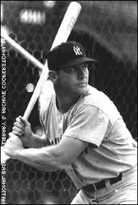

Regular season Year Team G AB R H 2B 3B HR RBI Avg. 1951 New York (A) 96 341 61 91 11 5 13 65 .267 1952 New York (A) 142 549 94 171 37 7 23 87 .311 1953 New York (A) 127 461 105 136 24 3 21 92 .295 1954 New York (A) 146 543 129 163 17 12 27 102 .300 1955 New York (A) 147 517 121 158 25 11 37 99 .306 1956 New York (A) 150 533 132 188 22 5 52 130 .353 1957 New York (A) 144 474 121 173 28 6 34 94 .365 1958 New York (A) 150 519 127 158 21 1 42 97 .304 1959 New York (A) 144 541 104 154 23 4 31 75 .285 1960 New York (A) 153 527 119 145 17 6 40 94 .275 1961 New York (A) 153 514 132 163 16 6 54 128 .317 1962 New York (A) 123 377 96 121 15 1 30 89 .321 1963 New York (A) 65 172 40 54 8 0 15 35 .314 1964 New York (A) 143 465 92 141 25 2 35 111 .303 1965 New York (A) 122 361 44 92 12 1 19 46 .255 1966 New York (A) 108 333 40 96 12 1 23 56 .288 1967 New York (A) 144 440 63 108 17 0 22 55 .245 1968 New York (A) 144 435 57 103 14 1 18 54 .237 Totals 2401 8102 1677 2415 344 72 536 1509 .298
World Series Year Opponent G AB R H 2B 3B HR RBI Avg. 1951 New York (N) 2 5 1 1 0 0 0 0 .200 1952 Brooklyn 7 29 5 10 1 1 2 3 .345 1953 Brooklyn 6 24 3 5 0 0 2 7 .208 1955 Brooklyn 3 10 1 2 0 0 1 1 .200 1956 Brooklyn 7 24 6 6 1 0 3 4 .250 1957 Milwaukee 6 19 3 5 0 0 1 2 .263 1958 Milwaukee 7 24 4 6 0 1 2 3 .250 1960 Pittsburgh 7 25 8 10 1 0 3 11 .400 1961 Cincinnati 2 6 0 1 0 0 0 0 .167 1962 San Francisco 7 25 2 3 1 0 0 0 .120 1963 Los Angeles 4 15 1 2 0 0 1 1 .133 1964 St. Louis 7 24 8 8 2 0 3 8 .333 Totals 65 230 42 59 6 2 18 40 .257
 Ronnie's Home Page or proceed to Next Section 